Homework 1 - Height Field Intersection
CSIE5098 - Digital Image Synthesis
Shiang-Yun Yang 楊翔雲
Date submitted: 28 Oct 2015
Code emailed: 28 Oct 2015
Description of implementation approach and comments
- Windows 7 64-bits
- Comipler & IDE: Microsoft Visual Studio 2012
- Image View Software: IrfanView
- Intel(R) Core(TM) i5-3470 CPU @ 3.20GHz 3.20GHz
- Intel(R) HD Graphics
- RAM 4.00 GB
實作採用 3D-DDA 算法降至 2D Grid 上進行交點測試。Uniform Grid 將會切割成 \(N \times M\) 的格子，在 2D 平面上，先找到 ray 進入的格子點，接著使用增量算法找到下一個格子，算法只測試投影到 x-y 平面上時，在 ray 鄰近的格子點做交點測試，時間複雜度 \(O(\sqrt{N \times M})\)，與預設的其他算法所需要的 traversal 複雜度差不多。
原本預設的 Height Field 拆成好幾個 Triangle，做法類似 Triangle Mesh，接著將這幾個 Triangle 利用 BVH 或者是 KD-tree 的架構進行，原本的做法會考慮三個維度，使用投影的方式只考慮兩個維度下的情況，接著再針對有相交的格子測試，最後才進行 3D Triangle 是否與 ray 相交。
實作 Height Field 時，考慮快取和再計算之間的好壞，則有兩種方法
- 預先將預處理每個 3D Triangle 座標 (消耗空間)
- 需要時，再創建 Triangle 出來測試 (消耗時間)
由於要找 ray 碰度到 uniform grid 的第一個格子，需要預處理 Height Field Bound Box，計算 Bound Box 需要 \(O(N \times M)\)，若不預處理會造成 3D-DDA 與暴力法 \(O(N \times M)\) 無異。
若對 Height Field 進行 2D-DDA 好處在於一定是數個三角形構成，因此不用等到 ray.maxT 小於下一格交點的 NextCrossingT[stepAxis] 才能結束，一與三角形有交點就可以離開，因為每一格之間都有獨立性。
實作與測試細節
測試環境
一開始為了熟悉 pbrt 架構環境只實作求出交點的函數，
bool Heightfield2::Intersect(const Ray &r, float *tHit, float *rayEpsilon,
DifferentialGeometry *dg) const {
// 3D DDA
}
而直接忽略單純詢問交點是否存在，這會導致畫面一片黑，因為每打到一個交點會嘗試從物體表面的交點連到點光源。若下述函數恆真，則不存在光源到交點的路徑，因此產出來的圖片是一片黑。
bool Heightfield2::IntersectP(const Ray &r) const {
return true;
}
紋理模糊
找出紋理的兩個參數 \((u, v)\) 時，從 trianglemesh.cpp 複製過來的 class Triangle 其 bool Triangle::Intersect() 函數得到的 \(u, v\) 都是相對於三角形的 \(0 \le u, v \le 1\) (直接 rendering 會看起來很多小格子點)，因此得到相對的 \(u, v\) 和交點 \(p_{hit}\) (Object coordinate)，則把 \(p_{hit}\) 再次投影到 x-y 平面上，由於 height field 在 x-y 平面上長寬都是 1，投影到平面後得到 \(p_{projection}\)，對於整個 height field \(u = p_{projection}.x, \; v = p_{projection}.y\)。
若測試 texture.pbrt 時，發生過模糊情況，其主要原因在於過多次座標轉換，如 Object -> World -> Object -> World，求出來的 \(u, v\) 誤差就會放大。
將 height field 存成好幾個 triangle 可以像 class TriangleMesh 利用 index 標籤來壓縮記憶體，但實作為方便仍然每一個三角形都有實體的 Point，儲存三角形每一個點座標採用 object coordinate，先把 \(ray\) 從 WorldToObject 得到 \(ray'\)，得到的交點 \(p_{hit}\) 再進行 ObjectToWorld，如此一來模糊情況就會消失。
Phong 圓滑化
Phong interpolation 方法在三角形上面操作時，需要得知三個頂點的法向量，給予 height field 的資訊，並不曉得每一個頂點的法向量為何。得到每一個頂點的法向量，採用預先處理所有頂點的法向量並儲存起來，因為不斷地正規化是很耗時間的 (float sqrt(float x) 儘管採用 fast inverse square root 算法，也要極力避免多餘的運算)。
再計算頂點法向量時，根據影像處理中常用的一次差分 (differentiation) 遮罩
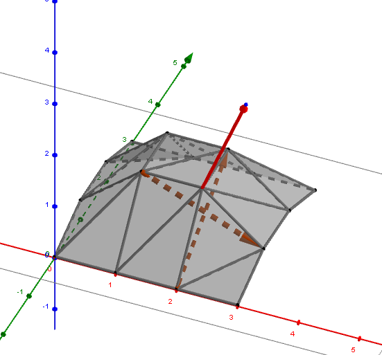
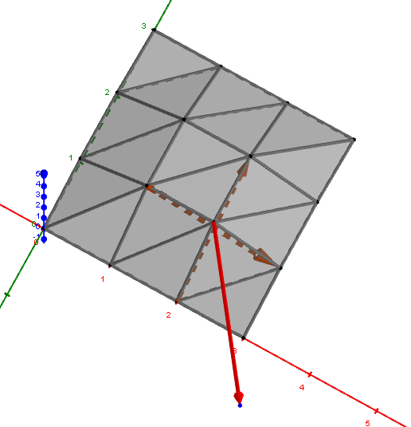
Normal
Case 1 邊緣
\[N_x = \begin{bmatrix}
0 & 0 & 0 \\
-1 & 1 & 0 \\
0 & 0 & 0 \\
\end{bmatrix}, \;
N_y = \begin{bmatrix}
0 & 0 & 0 \\
0 & 1 & 0 \\
0 & -1 & 0 \\
\end{bmatrix}
\]
Case 2 非邊緣
\[N_x = \begin{bmatrix}
0 & 0 & 0 \\
-1 & 0 & 1 \\
0 & 0 & 0 \\
\end{bmatrix}, \;
N_y = \begin{bmatrix}
0 & 1 & 0 \\
0 & 0 & 0 \\
0 & -1 & 0 \\
\end{bmatrix}
\]
上圖矩陣的中心座標為 \((x, y)\)，將相鄰座標的高度值 \(z\) 相減得到兩個方向的向量 \(N_x, \; N_y\)，外積得到座標 \((x, y)\) 的法向量 \(N_{x, y} = \mathrm{Cross}(N_x, N_y)\)。
從另一個角度來看，將 height field 三角化後，每一個頂點原則上有 6 個鄰居，可以對每一個鄰居進行差分，接著順時針或者逆時針將兩兩相臨的向量外積，得到 6 個法向量平均後得到 \(N_{x, y}\)，這做法看起來比上述的差分來得穩定，但初始化消耗的時間會比較長，且撰寫的外積順序不對容易造成零向量的正規化錯誤。
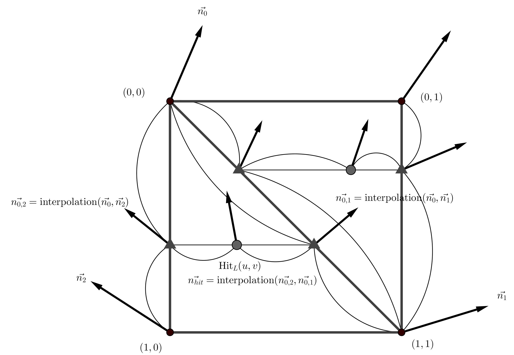
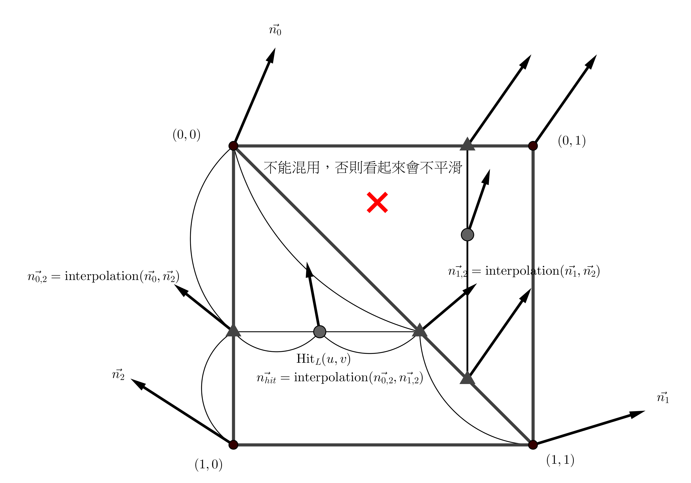
phong interpolation
Final Images Rendered with my implementation of heightfield.cpp
| 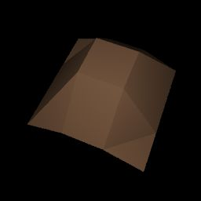
hftest.pbrt (without Phong
interpolation)
Timings:
- Original: 0.125 seconds
- My implementation: 0.130 seconds (104% original)
|
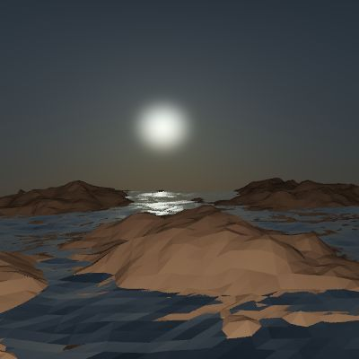
landsea-0.pbrt (without Phong
interpolation)
Timings:
- Original: 0.815 seconds
- My implementation: 1.050 seconds (128% original)
|
|
|
| 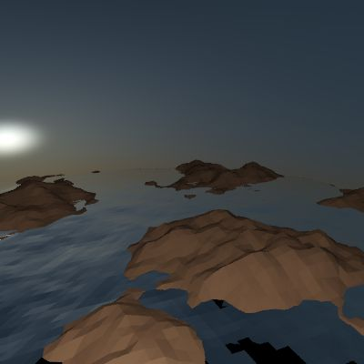
landsea-1.pbrt (without Phong
interpolation)
Timings:
- Original: 0.850 seconds
- My implementation: 1.020 seconds (120% original)
|
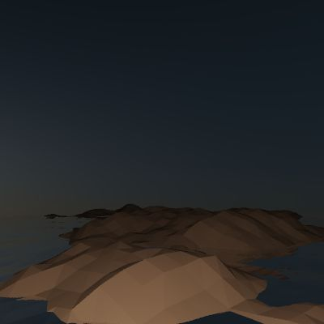
landsea-2.pbrt (without Phong
interpolation)
Timings:
- Original: 0.780 seconds
- My implementation: 0.870 seconds (115% original)
|
|
|
|
texture.pbrt (without Phong
interpolation)
Timings:
- Original: 0.450 seconds
- My implementation: 0.520 seconds (120% original)
|
|
|
|

landsea-big.pbrt (without Phong
interpolation)
Timings:
- Original: 6.200 seconds
- My implementation: 2.200 seconds (35% original)
|
Final Images Rendered with my implementation of heightfield.cpp
| 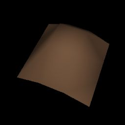
hftest.pbrt (with Phong
interpolation)
Timings:
- My implementation: 0.135 seconds
|
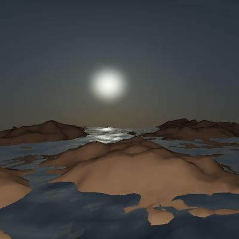
landsea-0.pbrt (with Phong
interpolation)
Timings:
- My implementation: 1.100 seconds
|
|
|
| 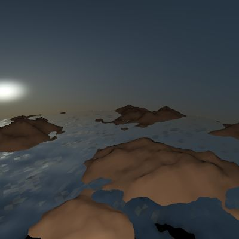
landsea-1.pbrt (with Phong
interpolation)
Timings:
- My implementation: 1.050 seconds
|
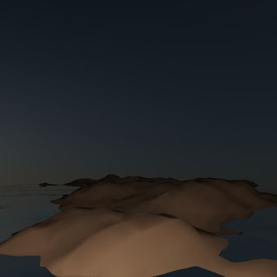
landsea-2.pbrt (with Phong
interpolation)
Timings:
- My implementation: 0.900 seconds
|
|
|
| 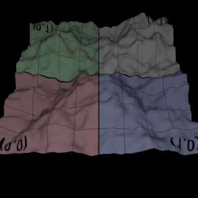
texture.pbrt (with Phong
interpolation)
Timings:
- My implementation: 0.530 seconds
|
|
|
|
|
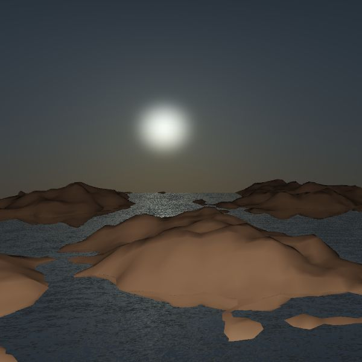
landsea-big.pbrt (with Phong interpolation)
Timings:
- My implementation: 2.300 seconds
|